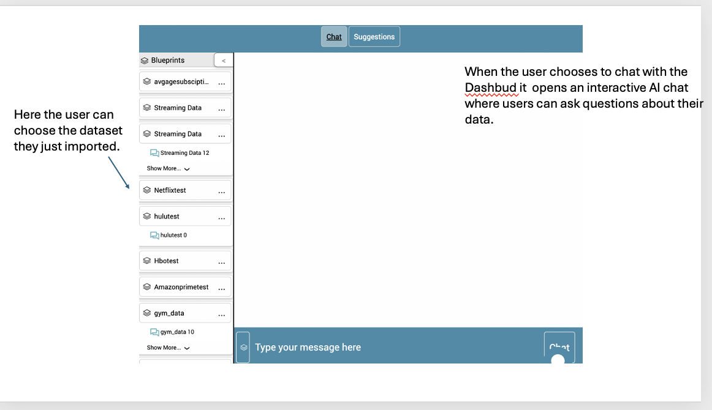
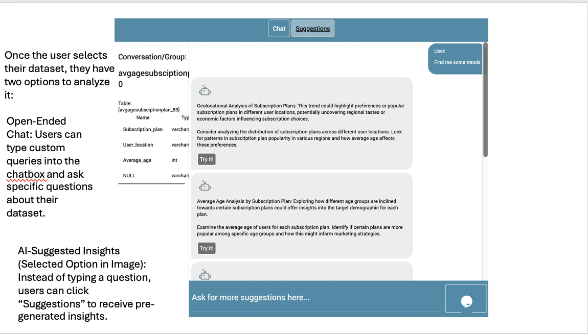
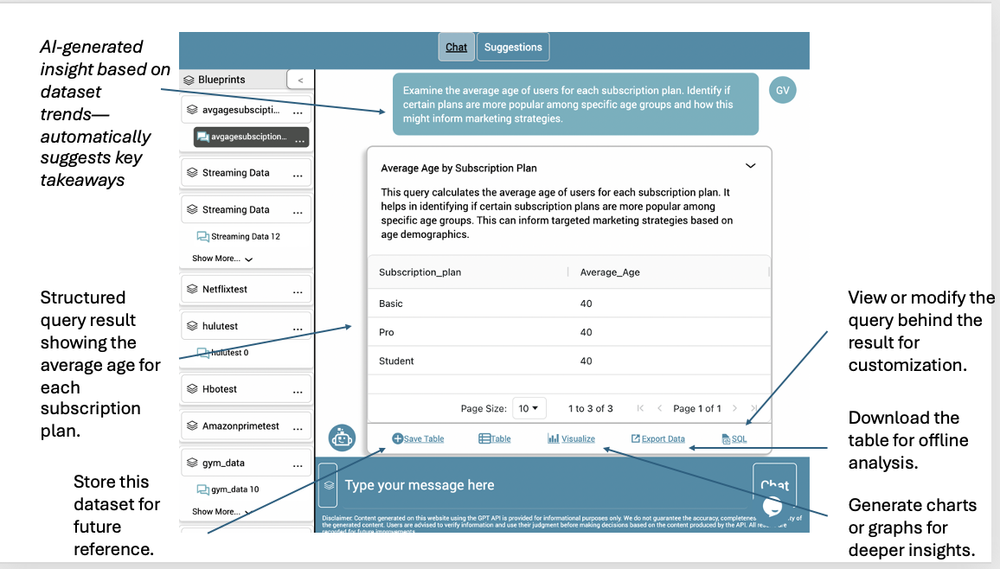
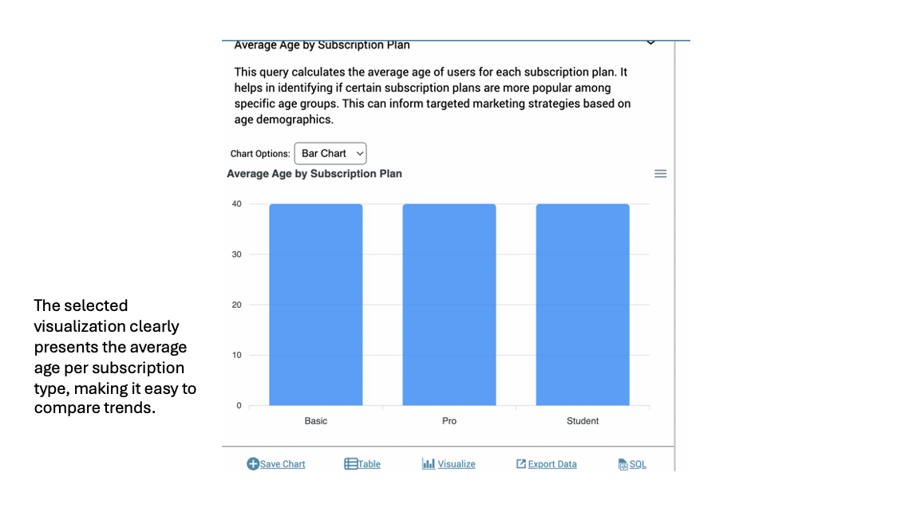
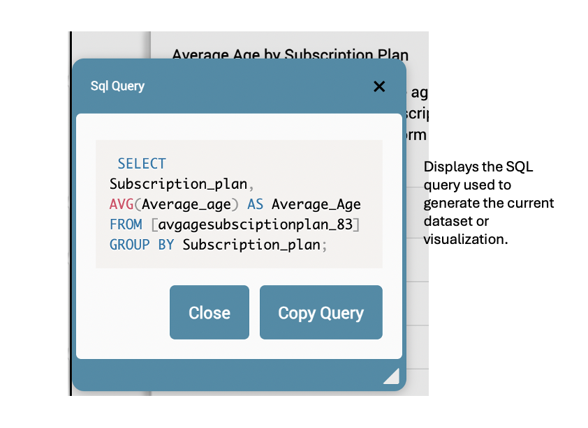

Conversations with Dashbud
This section walks through an example of interacting with Dashbud AI to analyze datasets.
The user selects a dataset from the available imports to start the conversation.
The user can type custom queries into the chatbox or use AI-generated suggestions.
Dashbud AI automatically suggests insights based on the dataset trends.
The structured query results are displayed for further analysis.
Users can view or copy the SQL query used to generate the dataset insights.